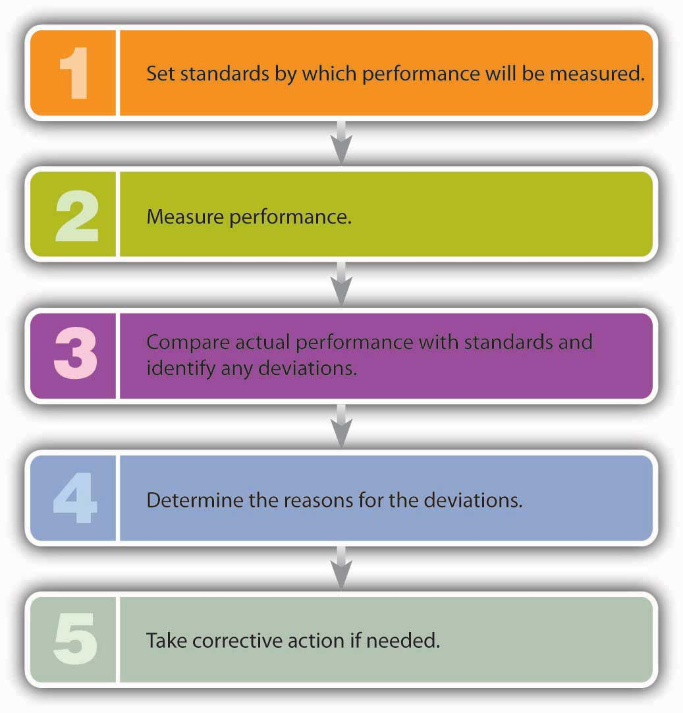

Let’s pause for a minute and reflect on the management functions that we’ve discussed so far—planning, organizing, and directing. As founder of Notes-4-You, you began by establishing plans for your new company. You defined its mission and set objectives, or performance targets, which you needed to meet in order to achieve your mission. Then, you organized your company by allocating the people and resources required to carry out your plans. Finally, you provided focus and direction to your employees and motivated them to achieve organizational objectives. Is your job finished? Can you take a well-earned vacation? Unfortunately, the answer is no: your work has just begun. Now that things are rolling along, you need to monitor your operations to see whether everything is going according to plan. If it’s not, you’ll need to take corrective action. This process of comparing actual to planned performance and taking necessary corrective action is called controllingManagement process of comparing actual to planned performance and taking corrective actions when necessary..
You can think of the control function as the five-step process outlined in Figure 6.10 "Five-Step Control Process".
Figure 6.10 Five-Step Control Process
Let’s see how this process might work at Notes-4-You. Let’s assume that, after evaluating class enrollments, you estimate that you can sell one hundred notes packages per month to students taking the sophomore-level geology course popularly known as “Rocks for Jocks.” So you set your standard at a hundred units. At the end of the month, however, you look over your records and find that you sold only eighty. Comparing your actual performance with your planned performance, you realize that you came up twenty packages short. In talking with your salespeople, you learn why: it turns out that the copy machine broke down so often that packages frequently weren’t ready on time. You immediately take corrective action by increasing maintenance on the copy machine.
Now, let’s try a slightly different scenario. Let’s say that you still have the same standard (one hundred packages) and that actual sales are still eighty packages. In investigating the reason for the shortfall, you find that you overestimated the number of students taking “Rocks for Jocks.” Calculating a more accurate number of students, you see that your original standard—estimated sales—was too high by twenty packages. In this case, you should adjust your standards to reflect expected sales of eighty packages.
In both situations, your control process has been helpful. In the first instance, you were alerted to a problem that cut into your sales. Correcting this problem would undoubtedly increase sales and, therefore, profits. In the second case, you encountered a defect in your planning and learned a good managerial lesson: plan more carefully.
The process of comparing actual to planned performance and taking corrective action is called controlling. The control function can be viewed as a five-step process: (1) establish standards, (2) measure performance, (3) compare actual performance with standards and identify any deviations, (4) determine the reason for deviations, and (5) take corrective action if needed.
(AACSB) Analysis
Have you ever gone to an ice cream stand and noticed that the “double dipper” ice cream cone the customer beside you bought has a lot more ice cream than does your “double dipper?” If you were the supervisor of the ice cream stand, how would you ensure that all cones received the same amount of ice cream? What if, instead of being the supervisor of the ice cream stand, you are the manager of a professional baseball team? How would you apply the five-step control process to your job as manager?